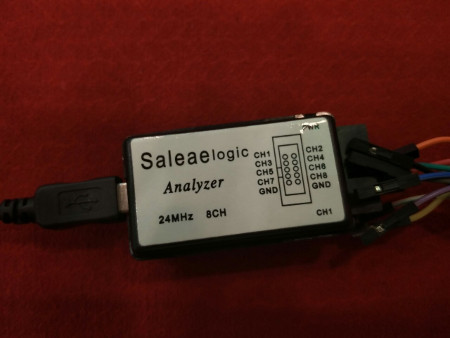

Hacking Hardware to talk with Android
Can we make that toaster talk with Android?
Vlatko Kosturjak (@k0st) and Dobrica Pavlinusic (@dpavlin) BalCCon2k16, 10th of September, 2016
Agenda
- Introduction
- Should I develop hardware at all?
- Where to start?
- Hardware communication
- Accessory Development Kit (ADK)
- Demos
- Summary
- Questions and answers
45 minutes
Kost: About me
- Security Consultant in Diverto
- offensive/penetration tester
- Linux and FLOSS enthusiast
- Open source developer
- Have code in OpenVAS, Nmap, Metasploit, ...
- https://github.com/kost
- Android "developer" since 2010
- started counting from first Market app
- mostly focused on NDK and ADK
About us in pictures

About us in pictures
Dobrica: about me
- System administrator at Library (FFZG)
- Free Software Biggot
- Hacking Hardware
Should I develop hardware at all?
- It depends :)
- Basic sensor data
- Ambient Temperature
- Humidity
- Accelerometers
- Other sensors / usage
- Wind speed
- Pyro
- SCADA
Example: Sensors Web Logger
- Simple Android App to log Sensors
- Basically it performs following
- Get All available sensors
- Send GET request to specified server
- Do it every X minutes
- Links
Example: Sensors Web logger
Where to start?
- final goal
- user experience
- speed of communication
- communication security
Basic hardware kit needed

Links on AliExpress/Bangood
- We're lazy - thanks Ivan Voras
- Soldering: http://goo.gl/ePG7Ni
- Voltmeter: http://goo.gl/J57z7N
- Osciloscope: http://goo.gl/HKuCbP
- Logic probe: http://goo.gl/rbWxJS
- Power source: http://goo.gl/76dPqO
- Arduinos: http://goo.gl/63pTE2
Useful hardware devices
- Beside that - we would recommend
- BusPirate
- TTL serial cable
- Actually you don't need TTL
- if you have BusPirate
Bus Pirate

Logic Analyzer
Communication
- Wireless
- Bluetooth
- NFC
- USB
- Serial
- ...
Wireless
- Frequency
- 2.4 Ghz
- 5 Ghz
- Standard wireless thing
- Access Point
- STA / clients
- ad hoc*
- mesh*
Useful wireless tools for reversing
- Obtaining
- Kismet
- Aircrack-ng suite
- tcpdump on device
- Analysing
- wireshark
- tshark
- moloch (heavy duty!)
- pcap bindings for your favourite language
- good hex editor and calculator
Daugther was crazy about RC cars
She lost interest, daddy got it
It's daddy toy

Security considerations
- Car is actually Wireless Access Point
- Open wireless network
- No password
- No encryption
- No authentication
- In short
- Get into business with camera covers for toys!
- We're in era where toys can spy on us
Basic protocol analysis
Few quick tips
- GUI is useful for quick analysis
- text is good for finding patterns
char peer0_0[] = {
0xa1, 0x7b, 0x00, 0x00, 0x00, 0x00, 0x00, 0x7b,
0xff, 0xa1, 0x7b, 0x00, 0x00, 0x00, 0x00, 0x00,
0x7b, 0xff };
tshark -r pcap1.pcap -T fields -e data
Wireless protocol reversing example
tshark -r pcap1.pcap -T fields -e data | grep a17 | less
a17b8e0000000009ff
a17b8e0000000009ff
a17b8e0000000009ff
a17b00000000007bff
a17b00000000007bff
a17b00000000007bff
Demo time!
Let's pray to the demo gods
Interesting part
She wants it back now :)
Bluetooth
- 2.4 Ghz
- Modes
- Server
- Client
- References
- https://developer.android.com/guide/topics/connectivity/bluetooth.html
Bluetooth Analysis
- It is possible with plugin
- Dump and analysis
- bluez tools
- ubertooth one
- spectrum analyzer (very low level)
- gnu radio and sdr (very low level)
- References
- http://ubertooth.sourceforge.net/
Bluetooth and PhoneGap
- It is possible with plugin
- Modes
- Server
- Client
- References
- https://github.com/don/BluetoothSerial
NFC
- 13.56 Mhz
- Near Field Communication
- Mifare not supported on newer Androids
- If it is Mifare Classic - you're lucky! ;)
- reversing/analysing/cracking easy
- except it does not work on Android very well
You tag might not be NFC
- 135 khz
- Alternative frequency and protocol
- Usually doors and access control systems
- Just ID
- No encryption
- IT does NOT work on Android very well
USB
- own device driver
- serial device
- HID device
- storage device
- ADB device
Debugging
- ADB over TCP/IP
- second USB port
- USB hub
- Toast Messages
- printk()
ADB over TCP/IP
- TCP port 5555
- adb example
- Security implications
ADB over TCP
- Usually hidden from Setting UI
- Usually does not need root
su
setprop service.adb.tcp.port 5555
stop adbd
start adbd
adb tcpip 5555
adb connect 192.168.0.101:5555
- Last one - if you have ADB USB already
Own device driver
- Hardware dependant
- kernel compatibility
- binary compatibility
- Specific cases
- Speed
Accessory Development Kit
- Officialy supported
- Bluetooth
- USB
- Protocol
- Android Open Acessory(AOA) protocol.
Simple ADK demo board
Serial
- Root is not needed
- Integrated in Android API
- Good frameworks on top of API
- Android 3.1+
- References
- https://developer.android.com/guide/topics/connectivity/usb/index.html
- https://stackoverflow.com/questions/21800932/comunicating-with-serial-usb-device-over-android
Android Serial Driver Library
- driver library for communication with USB serial hardware
- Using host API (Android 3.1+)
- USB host serial driver library for CDC, FTDI, Arduino and other devices
- References
- https://github.com/mik3y/usb-serial-for-android/
- https://stackoverflow.com/questions/21800932/comunicating-with-serial-usb-device-over-android
Simple serial example
sbSerialPort port = driver.getPort(0);
port.open(connection);
try {
port.setBaudRate(115200);
byte buffer[] = new byte[16];
int numBytesRead = port.read(buffer, 1000);
Log.d(TAG, "Read " + numBytesRead + " bytes.");
} catch (IOException e) {
} finally {
port.close();
}
PhoneGap/Cordova
- It is possible to talk serial
- Works only on android
- References
- https://github.com/xseignard/cordovarduino
- http://dynamicremo.blogspot.hr/2015/07/simple-serial-communication-app-using.html
Simple example
- Install cordova
- Install platform and plugin
cordova platform add android
cordova plugin add https://github.com/xseignard/cordovarduino.git
cordova run android --device
- Start communicating with serial port
Sample code
$(document).ready(function(){
$("#connect_button").click(function(){
serial.requestPermission(
function success(){
// BaudRate for many Chips: 115200, Sometimes arduino: 9600
var opts = {"baudRate":115200, "dataBits":8, "stopBits":1, "parity":0, "dtr":false}
serial.open(opts,
function success(){
alert("Success");
}, function error(evt){
alert("Error");
}
);
},
function error(evt){
alert("Error");
}
);
});
});
Multimeter

Multimeter communication analysis
- Multimeter have serial communication
- Basic serial communication reversing
- Looking at the product specification
- Looking at the similar products specs
- If not, basic baud rate "brute" guessing
- as well as other parameters (stop bit, etc)
- Getting as much communication as possible
- how it looks like in different states
- find patterns and differences
Security considerations
- Again, it's quite open
- No password
- No encryption
- No authentication
- But this time
- it's not wireless, only wired serial
- Know your threat model!
Multimeter communication
- Only receive serial communication
- Serial communication
- 2400 bps
- 8 bits
- 1 stop bit
- No Parity
- Packet pattern
- 14 byte packets with 0D0A on the end
- First few bytes - the value, other bit flags
Multimeter Android App
- What if I can get readings on Android
- Features
- get nice graph (1 channel logic analyzer)
- export values to CSV
- take picture with camera on spike (with OSD)
- Proof of concept
- Android App using mik3y serial library
- Drawing graphs using Android Plot
Demo time!
Let's pray to the demo gods
Multimeter App PoC

Summary
- Do you just need specific sensors?
- Reusing components
- Find device with similar functionality
- Add missing functionality
- USB
- prefer standard communication like serial
- ADB over TCP/IP
- Have fun!